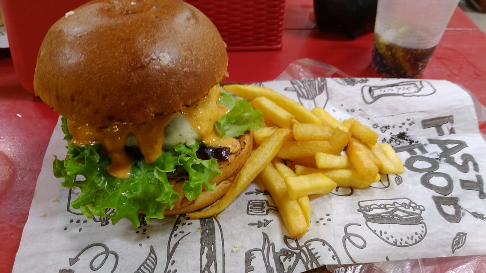

Hamburguer

Descriçao
Com essa receita voce será capaz de preparar um delicioso hamburguer!, basta seguir os passos da receita e colocar muito amor no preparo!
Ingredientes (rende 8 porçoes)
- 2 fatias de pão para hamburguer
- 1 kg de carne moída (de preferência patinho)
- 1 cebola media picada
- cebolinha a gosto
- orégano a gosto
- 1 sachê de creme de cebola
- 4 dentes de alho picado
- sal a gosto
- pimenta a gosto
Passo a Passo
Tempo de preparo: 30m
- Misture todos os ingredientes, amasse bem e forme bolinhas, depois achate para ter a forma de hambúrguer.
- Frite numa frigideira antiaderente, coloque uma colher de óleo pois a carne não tem gordura.
- Coloque a carne no pão